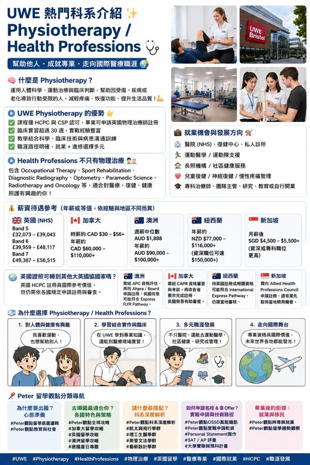

《看懂制度，選對世界》第一集
熱門科系：物理治療與健康專業
當很多家庭還在思考商科，設計，資工，AI，另一條與醫療健康高度相關的升學路線，正在被越來越多學生注意。那就是 與 這類科系很適合喜歡人體健康，運動復健，醫療照護，長照服務，兒童發展，運動傷害，復健科技的學生。

【 與 等同就業保證 】 當很多家庭還在思考商科，設計，資工，AI，另一條與醫療健康高度相關的升學路線，正在被越來越多學生注意。那就是 與 這類科系很適合喜歡人體健康，運動復健，醫療照護，長照服務，兒童發展，運動傷害，復健科技的學生。它的吸引力來自一件事，學生讀完後有明確專業方向，也有機會銜接英國及其他英語系國家的醫療職涯。. 什麼是 Physiotherapy 物理治療 很多人想到物理治療，會想到運動傷害，腰痛，肩頸痠痛，術後復健。其實物理治療師的工作範圍更廣。
他們會協助因受傷，疾病，老化，神經系統問題，肌肉骨骼問題而影響行動能力的人，透過評估，運動治療，復健計畫，疼痛管理，功能訓練，讓個案恢復生活能力，提升生活品質。這是一個結合醫學知識，人體科學，臨床判斷，病人溝通，團隊合作的專業。學生需要面對人，也需要理解醫療系統，身體功能與個案需求。. UWE Physiotherapy 的科系亮點 UWE Bristol 的 BSc Hons Physiotherapy 是英國受認可的物理治療課程。課程具 HCPC 與 CSP 認可，畢業後可申請英國物理治療師註冊。
對希望留在英國醫療體系，或將來轉往其他英語系國家發展的學生來說，這是很重要的基礎。UWE 的課程特色包含 超過 30 週臨床與工作場域實習 學習人體科學與復健評估 訓練臨床技能與病人溝通 接觸 NHS，私人機構，社區服務等場域 畢業後職涯方向明確 這類科系很適合想讀醫療健康，但未必想走醫學系訓練年限的學生。. Health Professions 涵蓋更多醫療專業 除了 Physiotherapy，Health Professions 還可延伸到許多方向。
Occupational Therapy 職能治療 協助個案恢復日常生活能力，包含學習，工作，居家活動與社會參與。Sport Rehabilitation 運動復健 適合對運動傷害，體能恢復，運動隊支援有興趣的學生。Diagnostic Radiography 診斷放射 與醫療影像，X 光，掃描檢查，臨床診斷支援相關。Optometry 視光學 與眼睛健康，視力檢查，驗光，視覺照護相關。Paramedic Science 緊急醫療 訓練急救判斷，現場應變，緊急照護能力。
這些方向共同特色是專業度高，職涯辨識度高，社會需求也持續增加。. 畢業後可以做什麼 Physiotherapy 畢業後，常見方向包含 NHS 醫院物理治療師 運動傷害與運動醫學 社區復健與長照服務 兒童發展與兒童復健 老人照護與慢性疼痛管理 骨科復健與術後復健 神經復健 職場傷害預防 臨床教育，研究，醫療管理 累積經驗後也可朝私人診所或自營服務發展 這是一條職涯目標明確的路。對想要學以致用，也希望未來工作與人群健康連結的學生，很有吸引力。. 薪資待遇參考 英國 新進物理治療師常見為 NHS Band 5。
Band 5 約 £32,073 到 £39,043。累積經驗後可升至 Band 6，約 £39,959 到 £48,117。再往上到 Band 7，約 £49,387 到 £56,515。加拿大 物理治療師常見時薪約 CAD $30 到 CAD $56.21。若以全職換算，年收入常見約 CAD $60,000 到 CAD $110,000 以上。澳洲 澳洲官方資料顯示，Physiotherapists 全職週薪中位數約 AUD $1,888。年薪常見約 AUD $90,000 到 AUD $100,000 以上。
紐西蘭 公立醫療體系常見年薪約 NZD $77,000 到 NZD $116,000。資深職位有機會達 NZD $150,000 左右。新加坡 常見月薪約 SGD $4,500 到 SGD $5,500 以上。資深職位，專科職位，管理職通常更高。薪資會因年資，城市，公私部門，專科方向，是否自營而有差異。招生說明時，建議用範圍呈現，避免學生與家長誤解成保證收入。. 英國證照到其他大英國協國家可以用嗎 英國 HCPC 註冊與 UWE 物理治療背景，具有國際參考價值。但每個國家都有自己的註冊制度。.